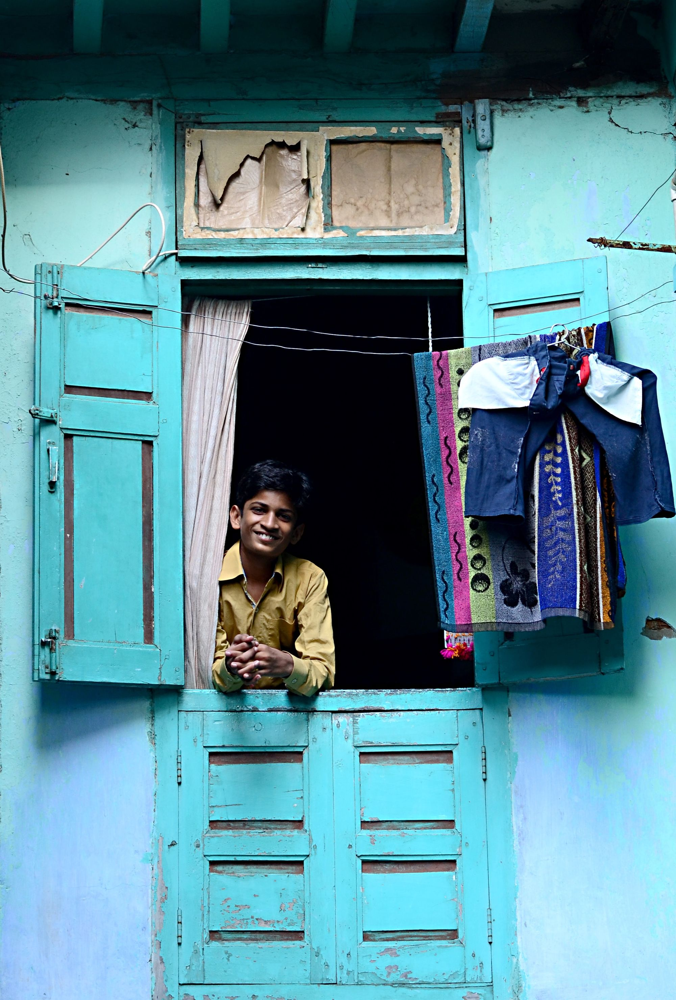

I live in Ahmedabad - a beautiful metro city of India. Ahmedabad is my native place where I born and I also grew up at a small village for couple of years after born - Dharampur.
There are basically few ways you can contact me.
Primary Contact
Phone: +91 (992) 474-8572 / +91 (816) 084-4060
Skype: tejas_suthar
Secondary Contact:
Email: tejact2007[at]gmail.com
Ahmedabad is India's First world heritage city. You must visit this city once in a lifetime for sure. Here are some of the snaps that define the Ahmedabad culture, people and life.
